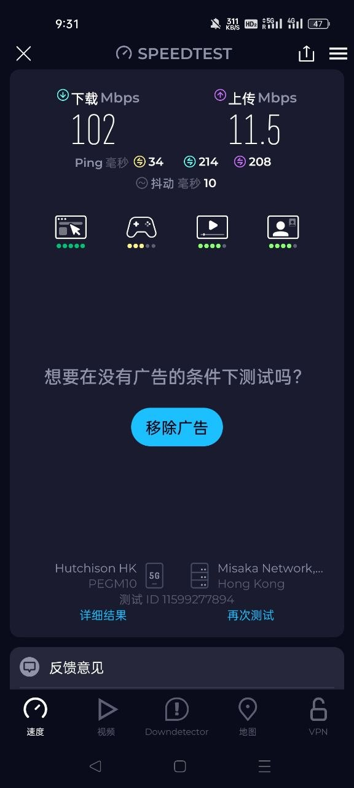

跨境移动数据是否值得看，先看路径和稳定性。
对很多用户来说，真正重要的不是宣传词，而是能否获得稳定的海外或香港移动数据出口、可用热点共享，以及更顺滑的国际网络访问体验。
China eSIM research reference
这个根站把中国 eSIM、中国内地可用 eSIM、香港 eSIM 中国能用吗、热点共享、号码短信能力这些高频搜索意图拆成独立页面，帮助用户用更低门槛理解国际网络连接路径。
对很多用户来说，真正重要的不是宣传词，而是能否获得稳定的海外或香港移动数据出口、可用热点共享，以及更顺滑的国际网络访问体验。


Core search pages
聚焦中国内地可用 eSIM、香港 eSIM 中国能用吗、热点共享、号码短信和价格结构。
从激活门槛、开卡步骤、续费逻辑到长期使用卖点，整理成一页简洁指南。
把现有卖点图片全部放进一个独立页面，按价格、激活、原生 IP、续费和自动发卡做证据化解释。
把全部卖点图片重新整理成客户向购买指南，重点讲清中国内地可用性、香港线路、号码短信、热点共享和长期续费。
把 Telegram 下单入口和低价流量、香港 IP、号码短信、自动发货组合起来解释，适合已经习惯用 Telegram 的跨境用户。
围绕香港线路、热点共享、号码短信和自动发货，解释为什么很多客户会把 eSIM 当作更顺手的跨境移动数据备用方案。
把客户最关心的价格折算、香港线路、号码短信、热点共享和续费保号拆开讲，比泛泛测评更适合拿来做购买判断。
用全屏视频首屏、购买前六问和整组本地图示证据，把中国内地可用、香港号码短信、热点共享、自动交付与转实体卡场景一次讲清。
把 automation_runs 里的有效图片全部整理成测评型图证库，集中说明中国内地可用 eSIM、香港号码短信、热点共享、低价流量、自动发货和转实体卡场景。
Use cases
不少用户想找的是国际移动数据备份链路，避免只依赖单一 Wi-Fi 或临时代理方案。
如果 eSIM 支持热点共享，手机就能临时给笔记本和轻办公设备提供稳定出口。
对注册、通知、长期维护有需求的人，更看重是否带号码、能否接短信，以及续费后是否好管理。
Research notes
标题、H1、首屏首段和 FAQ 都优先围绕中国 eSIM、中国内地可用 eSIM、香港 eSIM 中国能用吗这些真实搜索词来布局。
国际网络、香港线路、热点共享、号码短信能力等卖点，适合出现在对比、步骤和场景说明里，而不是全堆在标题上。
如果你已经明确需要自动发卡、长期续费、香港 eSIM 或中国内地可用 eSIM，可以再去看 esimka.top 的具体开卡入口。